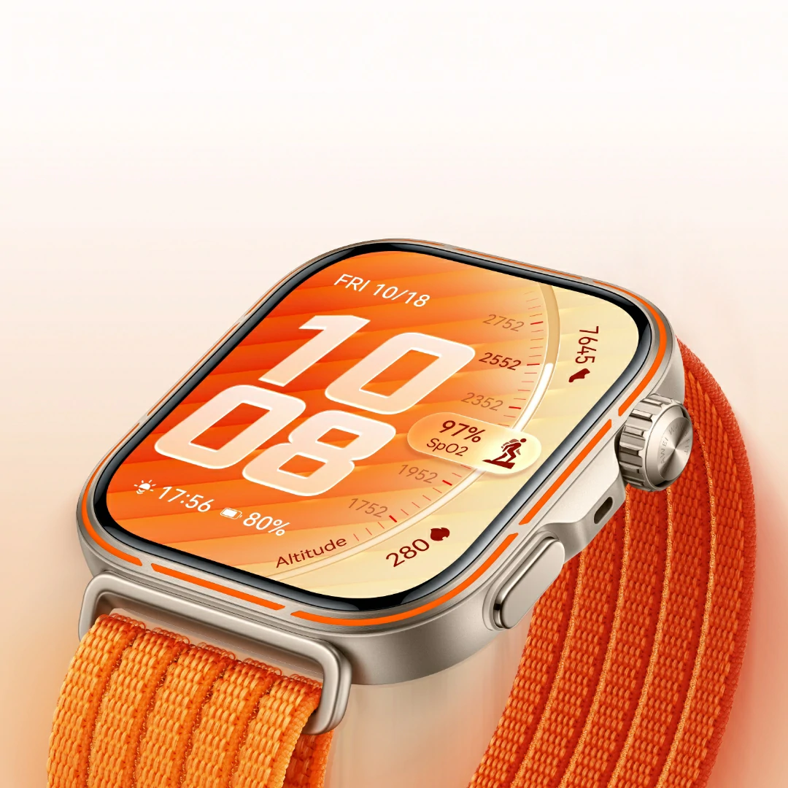
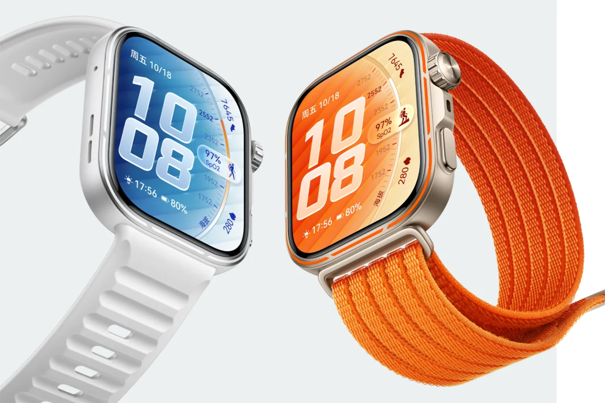

La Huawei Watch Fit 5 est la dernière génération de smartwatch de Huawei, dévoilée en juin 2026. C'est une montre connectée moderne conçue pour les utilisateurs actifs cherchant un équilibre entre style et fonctionnalités.
La Huawei Watch Fit 5 continue la tradition de la série Fit avec des améliorations significatives :
- un écran AMOLED ultra-lumineux et fluide
- une autonomie batterie exceptionnelle jusqu'à 14 jours
- des capteurs de santé avancés et fiables
- un design élégant et confortable pour le quotidien
🔍 Caractéristiques principales
Écran & Design
- Écran AMOLED 1,82" de haute résolution
- Cadre métallique avec bracelet en silicone premium
- Étanchéité 5 ATM (résistance jusqu'à 50 mètres)
- Poids léger : seulement 41 g
- Plusieurs options de coloris disponibles
Santé & Suivi
- Capteur de fréquence cardiaque haute précision
- Mesure de l'oxygène sanguin (SpO2) en continu
- Suivi du stress et de la qualité du sommeil
- Détection automatique de 100+ types d'exercices
- Cycle menstruel pour les femmes
Performance & Batterie
- Processeur haute efficacité énergétique
- Batterie 500 mAh pour jusqu'à 14 jours d'autonomie
- Charge rapide en seulement 1 heure
- Mode économie d'énergie pour autonomie prolongée
⚡ Connectivité & Fonctionnalités
La Huawei Watch Fit 5 offre :
- Bluetooth 5.3 pour une connexion stable
- GPS intégré pour le suivi des parcours
- NFC pour les paiements sans contact
- Notifications push depuis le téléphone
- Contrôle de la musique et des appels
🎯 Modes sportifs
- Course à pied avec analyse de performance
- Vélo et cyclisme indoor
- Natation avec suivi spécifique
- Yoga et entraînement de flexibilité
- Musculation et entraînement par intervalles
- 100+ autres activités sportives
🔐 Sécurité & Confidentialité
- Chiffrement des données de santé
- Authentification par empreinte digitale optionnelle
- Aucun partage de données sans consentement
- Conformité avec les normes de protection européennes
💶 Prix et disponibilité
- Présentée le 10 juin 2026 lors du Huawei Global Summit
- Positionnement premium-accessible pour les smartwatches
- Compatible avec Android et iOS
- Disponibilité mondiale annoncée pour juillet 2026
🎞️ Galerie photos


🎬 Démonstrations
💭 Mon avis
La Huawei Watch Fit 5 est vraiment impressionnante. C'est un excellent choix pour ceux qui cherchent une smartwatch fiable avec une grande autonomie sans se ruiner. Le suivi de santé est précis, le design est élégant et donc parfaite pour n'importe quelle activité sportive
Moi qui possède déjà la Fit 3 et la Fit 2, je suis toujours aussi enthousiaste de cette marque et impressionné par le prix vraiment faible et bon pour ce qui est proposé. Cette montre rivalise sérieusement contre les autres marques de smartwatches, notamment celles censées être destinées au sport. Je recommande vivement !